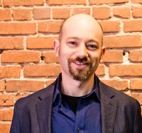
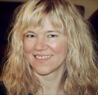

Netflix
74 people whose festival biography mentions Netflix. A mention can mean a job, a past job, a grant, a broadcast or an award: read the bio for which.
 Amanda PikePanelist, filmmaker, moderator · 6 editions, 2019–2025The Center for Investigative Reporting
Amanda PikePanelist, filmmaker, moderator · 6 editions, 2019–2025The Center for Investigative Reporting Nina AlvarezPanelist · 3 editions, 2021–2026
Nina AlvarezPanelist · 3 editions, 2021–2026
 Eric MatthiesFilmmaker, moderator, panelist · 3 editions, 2017–2021
Eric MatthiesFilmmaker, moderator, panelist · 3 editions, 2017–2021- Caty Borum ChattooModerator, panelist · 2 editions, 2015–2017School of Communication, American University
 Billy CorbenFilmmaker, panelist · 2 editions, 2024–2025
Billy CorbenFilmmaker, panelist · 2 editions, 2024–2025 Leslye DavisPanelist · 2 editions, 2020–2021
Leslye DavisPanelist · 2 editions, 2020–2021- Brian KnappenbergerPanelist · 2 editions, 2015–2017

 Eva OrnerFilmmaker · 2 editions, 2019–2021
Eva OrnerFilmmaker · 2 editions, 2019–2021 Jiayan "Jenny" ShiPanelist, filmmaker · 2 editions, 2020–2021
Jiayan "Jenny" ShiPanelist, filmmaker · 2 editions, 2020–2021
- Ryan WhiteFilmmaker, panelist · 2 editions, 2017–2020

- Karim AmerPanelist · 2019

 Sam BensteadFilmmaker, panelist · 2026
Sam BensteadFilmmaker, panelist · 2026 James BurnsFilmmaker · 2021
James BurnsFilmmaker · 2021
- Seung-ho ChoiPanelist · 2021
- Will CohenFilmmaker · 2018
 Philip CoxFilmmaker · 2025
Philip CoxFilmmaker · 2025- Catrin EinhornPanelist · 2020
- Orlando von EinsiedelFilmmaker · 2019
 Rachel FalconeFilmmaker, panelist · 2024
Rachel FalconeFilmmaker, panelist · 2024 Arjun FischerFilmmaker · 2026
Arjun FischerFilmmaker · 2026 Luchina FisherFilmmaker · 2023
Luchina FisherFilmmaker · 2023- Yance FordPanelist · 2018
 Darren FosterFilmmaker · 2022
Darren FosterFilmmaker · 2022 Nicole GormleyFilmmaker · 2024
Nicole GormleyFilmmaker · 2024 Princess HairstonPanelist · 2023
Princess HairstonPanelist · 2023

- Brent HuffmanFilmmaker · 2022
 Abraham JoffePanelist, filmmaker · 2025
Abraham JoffePanelist, filmmaker · 2025- Jeffrey JohnsonFilmmaker · 2022
 Conall JonesPanelist, filmmaker · 2025
Conall JonesPanelist, filmmaker · 2025- Brittany KaiserPanelist · 2020
 Rachel LearsPanelist · 2021
Rachel LearsPanelist · 2021
Annukka Lilja2026- Luke LorentzenPanelist · 2019
- Amy MarquisPanelist · 2019
 Rachel MasonPanelist · 2026
Rachel MasonPanelist · 2026 Emma D. MillerPanelist, filmmaker · 2024
Emma D. MillerPanelist, filmmaker · 2024 Matthew ModineFilmmaker, panelist · 2024
Matthew ModineFilmmaker, panelist · 2024 Jenni MorelloPanelist · 2021
Jenni MorelloPanelist · 2021 Merete MuellerFilmmaker · 2022
Merete MuellerFilmmaker · 2022 Stanley NelsonFilmmaker, panelist · 2021
Stanley NelsonFilmmaker, panelist · 2021- Marilyn NessPanelist · 2018
 Sierra PettengillFilmmaker · 2021
Sierra PettengillFilmmaker · 2021 Jerry RisiusFilmmaker · 2021
Jerry RisiusFilmmaker · 2021 Nimco SheikhadenFilmmaker · 2025
Nimco SheikhadenFilmmaker · 2025- Miriam ShorFilmmaker, panelist · 2026
 Bryn SilvermanFilmmaker · 2024
Bryn SilvermanFilmmaker · 2024 Caroline SuhFilmmaker · 2023
Caroline SuhFilmmaker · 2023 Jason SussbergPanelist · 2026
Jason SussbergPanelist · 2026
 Will ThwaitesPanelist, filmmaker · 2026
Will ThwaitesPanelist, filmmaker · 2026 Elizabeth Chai VasarhelyiPanelist · 2021
Elizabeth Chai VasarhelyiPanelist · 2021 Bea WangonduFilmmaker · 2026
Bea WangonduFilmmaker · 2026- Jean WehnerPanelist · 2017
 Steven Leckart · Maia WiklerFilmmaker · 2026
Steven Leckart · Maia WiklerFilmmaker · 2026